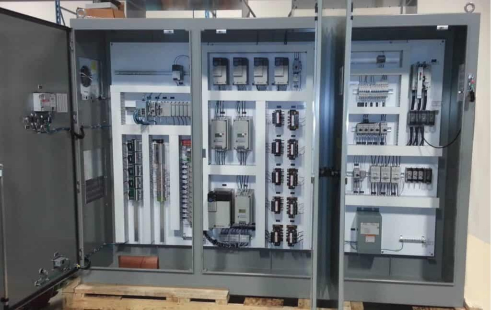

Built on accountability, discipline, and pride in the work.

Power solutions built for the real world
Power Without Compromise.
5K Power delivers UL-certified electrical manufacturing, temporary power solutions, integrated skid systems, and project-specific power assemblies for demanding infrastructure projects nationwide.
Veteran-operated and built around real-world project demands, we combine technical capability, responsive execution, and shorter lead times to help keep critical work moving.
Built to move power forward
Manufacturing Built Around the Project.
Electrical equipment delays, supply chain constraints, temporary power requirements, and inconsistent production can put schedules at risk.
5K Power was built to provide another way.
Our leadership team brings more than two decades of experience across electrical construction, field operations, and power infrastructure, including hands-on experience at the master electrician level. That background gives 5K Power a practical understanding of the challenges contractors and project teams face when equipment, power, and schedules must come together in the field.
From permanent electrical distribution equipment to temporary power and integrated skid systems, our solutions are built for the realities of the field, not simply pulled from a catalog.
Supporting infrastructure and power requirements across the United States.
A responsive manufacturing model designed to reduce traditional equipment lead-time exposure.
Power systems built around real scope, schedule, installation, and operational requirements.
What we build
Solutions Built Around the Job.
Complex projects need more than equipment. They need power solutions that arrive ready, perform as intended, and support the schedule.

UL-Certified Manufacturing
Custom electrical distribution equipment produced with established UL standards, structured QA/QC, and technical oversight.
Explore UL Manufacturing →
Temporary Power Solutions
A complete temporary power ecosystem designed to keep construction, commissioning, and critical operations energized.
Explore Temporary Power →
Integrated Skid Solutions
Manufacturing, assembly, testing, coordination, and deployment from equipment receipt through final setting.
Explore Skid Solutions →When the schedule can't wait
Built to Move Faster.
Long electrical equipment lead times can impact everything downstream, from manpower planning and temporary power to commissioning and energization.
Through controlled manufacturing, coordinated procurement, standardized technical requirements, and direct production oversight, 5K Power is built to reduce the lead-time exposure associated with traditional equipment channels.
Getting the right equipment matters. Getting it when the project needs it matters just as much.
Request a Quote →What's next
Expanding Our Capabilities.
5K Power is continuing to invest in the people, certifications, equipment, and technical capabilities needed to support increasingly complex power infrastructure projects.
Medium Voltage
Expanded medium-voltage capabilities designed to support larger and more demanding power distribution applications.
NETA
Expanded electrical testing capabilities to support equipment verification, system performance, and project commissioning requirements.
Build something that matters
Power Takes People.
5K Power is growing, and we're looking for people who take pride in building things the right way. If you value craftsmanship, accountability, technical excellence, and being part of a team that gets the job done, we want to hear from you.
Explore Careers →Power without compromise.